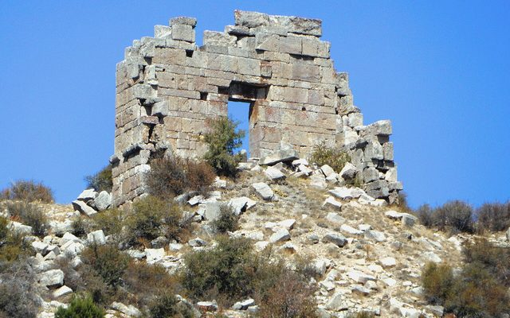

Kültür Varlıkları指南收录了科尼亚的22个地点：10 博物馆, 7 考古遗址, 2 宗教建筑, 2 湖泊, 1 城堡与历史建筑。下面是重点推荐、地图和完整列表。
⭐ 重点推荐

1 · 科尼亚 · 考古遗址恰塔霍裕克遗址
恰塔霍裕克位于科尼亚平原，是一处大型新石器时代聚落，也是人类向定居、类城镇生活过渡的最重要见证之一。人们认为大约九千年前，这里生活着数千人，却没有街道：泥砖房屋墙挨着墙，居民通过梯子从屋顶进出。墙上绘有狩猎场景和图案，有些房间饰有牛头和牛角，死者则葬在地板之下。保护顶棚下的发掘区和复原房屋，帮助游客想象那个世界。自 2012…

2 · 科尼亚 · 博物馆梅夫拉纳博物馆
科尼亚的梅夫拉纳博物馆安放着伟大的神秘主义者和诗人贾拉勒丁·鲁米的陵墓，以及他的追随者梅夫拉维教团的修道院。鲁米于 13…

3 · 科尼亚 · 博物馆阿克谢希尔纳斯尔丁·霍加考古与民族志博物馆
阿克谢希尔纳斯尔丁·霍加考古与民族志博物馆介绍了阿克谢希尔的悠久历史，举世闻名的幽默大师纳斯尔丁·霍加曾在这里生活并长眠于此。小城古称菲洛梅利翁，后来成为塞尔柱时期重要的商队驿站，石头经学院等建筑即是见证。考古文物与当地服饰、手工艺品和日常用品一同展出；每年 7 月的纳斯尔丁·霍加节为小城增添色彩。
🗺 地图
📍 全部地点 (22)
博物馆 (10)
梅夫拉纳博物馆博物馆阿克谢希尔纳斯尔丁·霍加考古与民族志博物馆博物馆 西线司令部博物馆博物馆
西线司令部博物馆博物馆 卡拉塔伊博物馆（瓷砖博物馆）博物馆
卡拉塔伊博物馆（瓷砖博物馆）博物馆 科尼亚考古博物馆博物馆
科尼亚考古博物馆博物馆 科尼亚阿塔图尔克故居博物馆博物馆
科尼亚阿塔图尔克故居博物馆博物馆 科尼亚民族志博物馆博物馆
科尼亚民族志博物馆博物馆 科尼亚全景博物馆博物馆
科尼亚全景博物馆博物馆 伊泽特·科云奥卢城市博物馆博物馆埃雷利博物馆博物馆
伊泽特·科云奥卢城市博物馆博物馆埃雷利博物馆博物馆考古遗址 (7)
恰塔霍裕克遗址考古遗址 · UNESCO 邦朱克卢土丘考古遗址
邦朱克卢土丘考古遗址 埃弗拉通珀纳尔赫梯水神殿考古遗址
埃弗拉通珀纳尔赫梯水神殿考古遗址 法瑟拉尔纪念碑考古遗址
法瑟拉尔纪念碑考古遗址 基利斯特拉考古遗址
基利斯特拉考古遗址 库巴达巴德宫考古遗址
库巴达巴德宫考古遗址
曾吉巴尔城堡（伊索拉）考古遗址